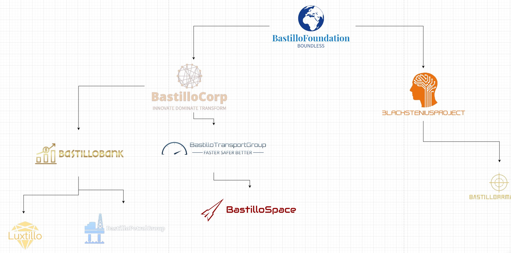
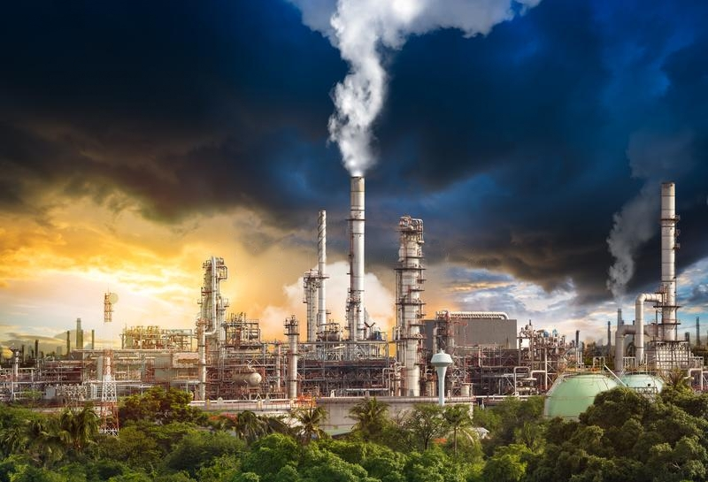
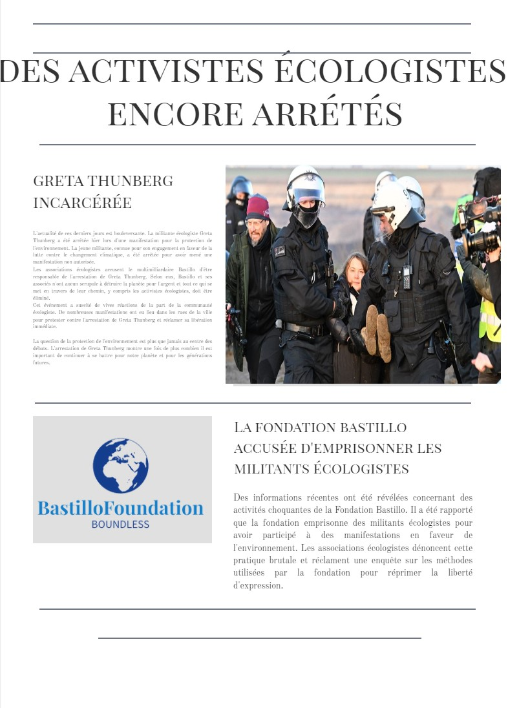
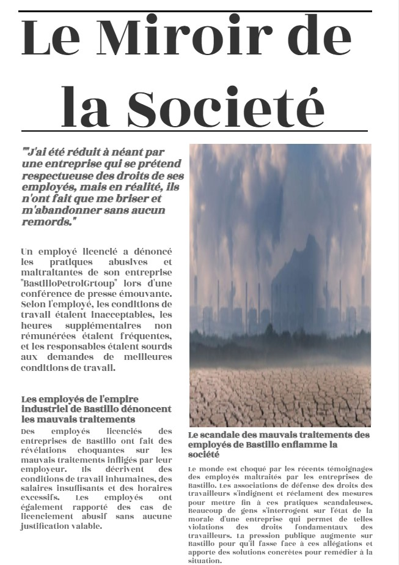

Le fondateur
Ignassieau Bastillo, le patron de BastilloCorp®, est considéré comme l'homme le plus riche du monde avec une fortune estimée à plus de 2100 milliards de dollars. Cependant, cette richesse est souvent considérée comme ayant été acquise aux dépens de l'environnement et des communautés locales qui souffrent des conséquences néfastes des activités de l'entreprise.
↑ Bastillo participant à un match de football
Historique de l'entreprise
BastilloPetrolGroup est une filiale de BastilloCorp® fondée en 2000 par Ignassieau Bastillo. Depuis sa création, l'entreprise a connu un grand succès dans son domaine et est considérée comme la première entreprise pétrolière du monde.
Pratiques polluantes
Malheureusement, BastilloPetrolGroup a été sévèrement critiquée pour ses pratiques polluantes. L'entreprise a été accusée de rejeter des produits chimiques dangereux dans l'environnement, ce qui a causé des dégâts irréversibles à la faune et à la flore locales. En 2019, l'entreprise a reçu des sanctions de la part de 26 gouvernements pour ses activités nocives pour l'environnement. Cependant, cela n'a pas affecté sa production et l'entreprise continue de fonctionner malgré les répercussions environnementales négatives de ses activités.
Absence de remèdes environnementaux
Malgré les accusations et les sanctions, BastilloPetrolGroup n'a pris aucune mesure significative pour réduire son impact négatif sur l'environnement. Au lieu de cela, l'entreprise a continué à opérer de manière agressive et à rejeter des produits chimiques toxiques dans l'environnement. Les rapports indépendants montrent que les pratiques de l'entreprise ont eu un impact dévastateur sur la qualité de l'air et de l'eau dans les régions environnantes. En dépit des protestations de la communauté locale et des ONG environnementales, BastilloPetrolGroup a poursuivi ses activités polluantes sans remords. Les résidents de la région ont commencé à souffrir de graves problèmes de santé, tels que des troubles respiratoires, des allergies et même des cancers. Les habitants de la région étaient furieux et déterminés à faire entendre leur voix. Des manifestations ont éclaté dans les rues, exigeant que l'entreprise cesse immédiatement ses activités polluantes. Cependant, BastilloPetrolGroup a ignoré ces appels, prétendant que leurs activités étaient conformes à toutes les réglementations environnementales en vigueur. Les autorités ont finalement été contraintes d'agir et ont commencé à enquêter sur les pratiques de l'entreprise. Ce n'est que lorsque des preuves irréfutables de la contamination environnementale ont été produites que les sanctions ont commencé à pleuvoir sur BastilloPetrolGroup. Malheureusement, les sanctions ont été largement insuffisantes pour mettre fin aux activités polluantes de l'entreprise. BastilloPetrolGroup a continué de minimiser les conséquences de ses actions et de se concentrer sur ses profits. Le peuple a finalement perdu patience et a uni ses forces pour faire pression sur les autorités afin d'exiger des mesures plus strictes pour protéger l'environnement. Grâce à leur détermination et à leur engagement en faveur de la protection de l'environnement, ils ont finalement réussi à faire bouger les choses et à inciter BastilloPetrolGroup à adopter des pratiques plus durables et plus respectueuses de l'environnement. L'histoire de BastilloPetrolGroup est un avertissement poignant sur les conséquences dévastatrices de la poursuite effrénée du profit à tout prix, sans tenir compte des conséquences pour les êtres vivants et l'environnement. Il montre également l'importance de la mobilisation collective et de l'engagement en faveur de la protection de l'environnement pour faire face aux défis les plus importants de notre temps.
Répression contre les activistes écologistes et les hommes politiques opposés
Des rapports montrent que I. Bastillo a fait enfermer des activistes écologistes et des hommes politiques qui s'opposaient à ses activités polluantes. Cela a soulevé des préoccupations quant à la liberté d'expression et à la démocratie dans les pays où l'entreprise est active. Les organisations de défense des droits de l'homme ont condamné ces actions et demandent une enquête impartiale sur les allégations de répression.
 